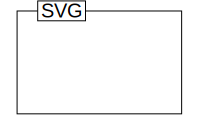

Include with object tag
N/A.
Include with embed tag
Include with iframe tag
<p>N/A.</p>
Include with img tag

Javascript copy/paste here, original jquery-svg
click me
Javascript copy/paste here, patched jquery-svg
click me
Manual copy/paste here
image/svg+xml
SVG